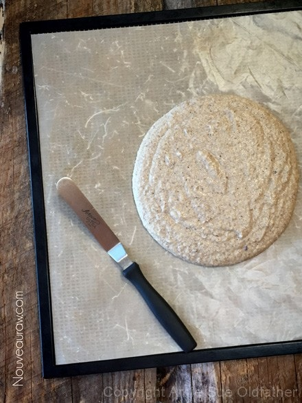
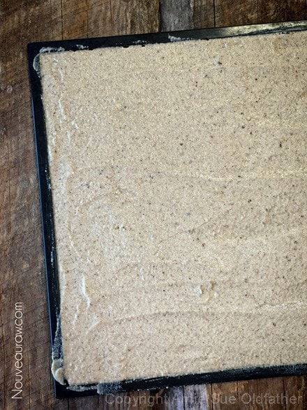
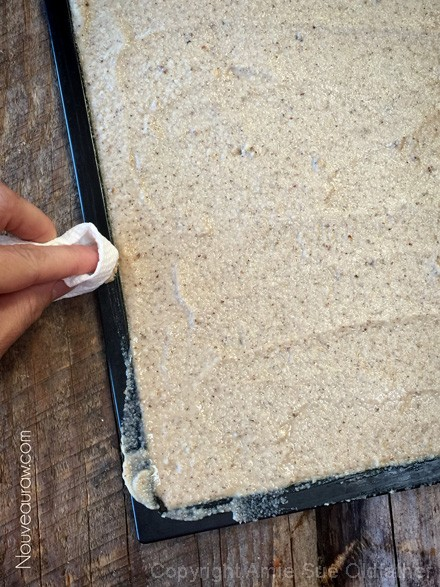
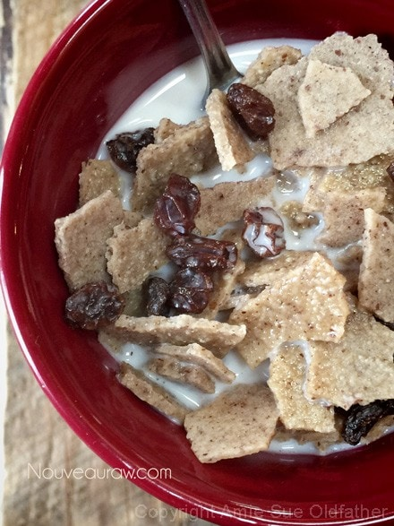
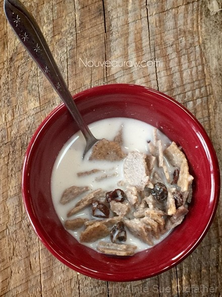
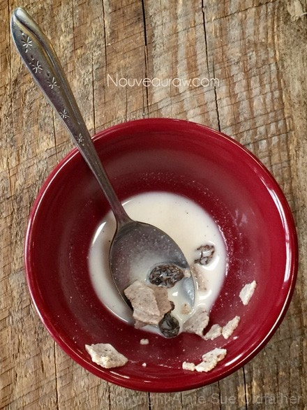

Nutty Raisin Bran Flakes
~ raw, vegan, gluten-free ~
How do you wake up in the morning? Do you roll out of bed so slow that you flop onto the floor, jolting yourself awake? Do you hit snooze three times? Do you bounce out of bed ready to take on the day? I have known some people who wake up so grumpy that it was in your interest and safety to clear a path that leads them straight to the coffee pot.
I once had a roommate that would hit snooze so many times that she would end up flying out of the apartment, dressing, doing her makeup and hair…. while driving! She did this every day. It exhausted me just to witness it. These days I am blessed to wake up next to my husband who always wakes up happy, snuggly, and smiley.
Rituals set your day in motion.
If you are always miserable, unhappy, grumpy, and (insert adjective)… it could possibly be due to the rituals that you have put in place, and may not even be aware of them. Do you stay up to0 late regardless of how early you need to get up in the morning? Does this lead to oversleeping, causing your day to start out rushed and hectic? Are you addicted to caffeine and without that morning jolt, you can’t even squeak out a smile. How we start the day can often dictate how the rest of the day is going to go and even end.
The seeds you sew, are the rewards you will reap.
Mornings can be one of the most sacred moments of the day. The air is quiet, and still, the only sounds found within the house come from the gentle hum of the refrigerator, and the birds are just starting to fill the air with their songs. The rituals that you create plant seeds and as the day progresses you can reap the rewards.
Through the simple practice of honoring yourself each morning, you can take your life to a whole new level. To create this precious time for yourself, you might have to do some serious thinking and adjusting… but aren’t YOU worth it.
Ingredients:
Preparation:
- In a large mixing bowl, combine the almond flour, oat flour, ground pecans, and salt.
- Add the honey and almond milk. Mix with a fork.
- Pour the batter onto a non-stick sheet that comes with the dehydrator.
- You can use parchment paper but not wax (food will stick).
- With an off-set spatula, spread the batter from one edge to another.
- Don’t worry about getting batter on the sides of the tray. Once done spreading you can wipe it clean with a paper towel.
- Dehydrate at 145 degrees (F) for 1 hour, then reduce to 115 degrees (F) for around 4 hours or until it is dry enough to flip over onto a mesh sheet, gently peeling back the non-stick sheet.
- Continue to dry until crispy. Mine took a total of 24 hours, but the humidity in the ambient air has been high this time of year.
- Gently break into small random sized pieces to create the flakes.
- Store in an airtight container in the pantry for 2-4 weeks. I froze a batch and thoroughly enjoyed it a few months later.
- This cereal passed my 10-minute test – meaning it still had crunch after sitting in almond milk for 10 minutes.
- Enjoy.
Culinary Explanations:
- Why do I start the dehydrator at 145 degrees (F)? Click (here) to learn the reason behind this.
- When working with fresh ingredients, it is important to taste test as you build a recipe. Learn why (here).
- Don’t own a dehydrator? Learn how to use your oven (here). I do however truly believe that it is a worthwhile investment. Click (here) to learn what I use.
Start by creating the cereal batter…

Spread it thin and evenly over the dehydrator tray…

Clean up the edges…

Once dried, break into flakes and immediately make up a bowl.

Take your time and enjoy each bite…

Awe, forget it… indulge and enjoy!

© AmieSue.com